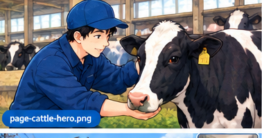

Dari gambaran pekerjaan sehari-hari, jadwal kerja, peralatan yang dipakai, sampai kosakata dan budaya kerja — semua yang perlu kamu tahu sebelum berangkat sebagai SSW peternakan sapi.

Perusahaan penempatan biasanya bergerak di salah satu dari dua jenis peternakan ini. Pekerjaan hariannya cukup berbeda, jadi penting untuk tahu kamu akan ditempatkan di jalur yang mana.
Fokus utama adalah produksi susu. Sapi diperah 2 kali sehari (pagi & sore) dengan mesin, sehingga jadwal kerja lebih terikat waktu dan berulang setiap hari tanpa jeda musim.
Fokus pada pertumbuhan dan kesehatan sapi hingga siap panen (termasuk sapi wagyu kelas premium). Tidak ada rutinitas pemerahan, tapi ketelitian dalam pemberian pakan dan pemantauan berat badan sangat penting.
Ilustrasi jadwal harian umum di peternakan sapi Jepang. Waktu pasti bisa berbeda tiap perusahaan, tapi polanya mirip di kebanyakan tempat.
Bangun, ganti seragam kerja, cek kondisi kandang dan sapi secara umum — ada yang sakit, stres, atau tidak biasa semalam.
Khusus sapi perah: memasang mesin pemerah, memantau aliran susu, mencatat volume per ekor. Sapi pedaging: memberi pakan pagi & air minum.
Sapi PerahJeda istirahat singkat untuk sarapan bersama tim, biasanya di ruang istirahat karyawan.
Semua JenisMembersihkan kotoran, mengganti alas kandang (bedding), menyemprot disinfektan, dan merapikan area makan.
Semua JenisMenyiapkan dan membagikan pakan sesuai takaran, mengamati nafsu makan dan tanda-tanda sapi sakit satu per satu.
Jam makan siang dan istirahat, biasanya 1 jam sebelum kembali ke pekerjaan sore.
Semua JenisPerawatan kuku, pengecekan birahi (estrus), inseminasi buatan bila dijadwalkan, atau perbaikan fasilitas kandang.
Sesi kedua pemerahan untuk sapi perah, atau pemberian pakan sore terakhir untuk sapi pedaging.
Sapi PerahBersih-bersih peralatan, cek terakhir kondisi kandang, dan melaporkan kondisi hari itu ke supervisor sebelum pulang.
Semua JenisPeternakan sapi beroperasi setiap hari (hewan perlu dirawat setiap hari, termasuk akhir pekan), jadi sistem shift dan rolling day-off jadi kuncinya.
| Hari | Shift | Jam Kerja | Status |
|---|---|---|---|
| Senin | Pagi + Sore | 05:00–08:00, 16:30–19:00 | Kerja |
| Selasa | Pagi + Sore | 05:00–08:00, 16:30–19:00 | Kerja |
| Rabu | — | — | Libur |
| Kamis | Pagi + Sore | 05:00–08:00, 16:30–19:00 | Kerja |
| Jumat | Pagi + Sore | 05:00–08:00, 16:30–19:00 | Kerja |
| Sabtu | Pagi + Sore | 05:00–08:00, 16:30–19:00 | Kerja |
| Minggu | Pagi saja | 05:00–08:00 | Kerja (ringan) |
Peternakan Jepang umumnya sudah modern. Kenali dulu nama dan fungsi alatnya biar tidak kaget saat orientasi kerja.
Alat otomatis yang dipasang ke ambing sapi untuk memerah susu secara higienis, biasanya terhubung ke sistem pencatatan volume otomatis.
Gerobak/traktor pencampur pakan (Total Mixed Ration) yang mengaduk hijauan, konsentrat, dan mineral jadi satu campuran pakan seimbang.
Label telinga bernomor unik tiap sapi, dipindai untuk mencatat riwayat kesehatan, produksi susu, dan jadwal vaksinasi per ekor.
Alat pembersih kotoran otomatis atau semi-otomatis yang menjaga lantai kandang tetap bersih dan mengurangi risiko penyakit.
Digunakan untuk merawat dan memotong kuku sapi secara berkala agar tidak pincang dan tetap nyaman berjalan/berdiri lama.
Sensor pedometer/kalung pintar yang mendeteksi aktivitas, suhu tubuh, dan tanda birahi sapi secara otomatis lewat aplikasi.
Hafalkan kosakata ini dulu sebelum berangkat — akan sering kamu dengar di kandang sehari-hari.
| Jepang | Arti |
|---|---|
| 牛舎 gyūsha | Kandang sapi |
| 乳牛 nyūgyū | Sapi perah |
| 肉牛 nikugyū | Sapi pedaging |
| 子牛 koushi | Anak sapi (pedet) |
| Jepang | Arti |
|---|---|
| 搾乳 sakunyū | Memerah susu |
| 給餌 kyūji | Memberi pakan |
| 飼料 shiryō | Pakan ternak |
| 清掃 seisō | Membersihkan / bersih-bersih |
| 消毒 shōdoku | Disinfeksi |
| Jepang | Arti |
|---|---|
| 体調不良 taichō furyō | Kondisi tubuh tidak sehat |
| 発情 hatsujō | Birahi / estrus |
| 分娩 bunben | Melahirkan (calving) |
| 獣医 jūi | Dokter hewan |
Gambaran percakapan sederhana antara senpai (senior/pembimbing) dan pekerja SSW baru di kandang.
Memahami budaya kerja Jepang membantumu beradaptasi lebih cepat dan membangun hubungan baik dengan rekan kerja.
Datang 10–15 menit lebih awal dianggap standar, bukan pengecualian. Sapi juga butuh jadwal yang konsisten setiap hari.
Prinsip Seiri-Seiton-Seiso-Seiketsu-Shitsuke (ringkas, rapi, resik, rawat, rajin) diterapkan ketat, termasuk di kandang dan gudang alat.
Hormati senior (senpai) sebagai pembimbing. Gunakan bahasa sopan (keigo dasar) dan jangan ragu bertanya jika belum paham instruksi.
Budaya lapor-hubungi-konsultasi. Selalu laporkan progres, masalah, atau hal tak biasa — jangan menunggu ditanya duluan.
Pekerjaan kandang jarang dilakukan sendirian. Komunikasi non-verbal (isyarat, gestur) juga penting saat suasana bising atau sibuk.
Selalu melakukan prosedur yang sama persis setiap hari (SOP), sambil terbuka terhadap perbaikan kecil berkelanjutan (kaizen).
Persiapan ini akan membuatmu jauh lebih siap dibanding rekan lain saat hari pertama kerja.
Fokus 100–150 kosakata teknis yang paling sering dipakai (lihat bagian Kosakata di atas) sebelum belajar tata bahasa rumit.
Biasakan bangun jam 4–5 pagi dan latihan fisik ringan mulai sekarang, karena ritme kerja di kandang menuntut stamina harian.
Cari video atau pelatihan dasar cara mendekati dan menangani sapi dengan aman sebelum berangkat, kalau memungkinkan.
Coba hafal dan praktikkan contoh percakapan di atas dengan teman atau mentor sampai terasa natural diucapkan.
Pekerjaan ini konsisten dan berulang setiap hari termasuk musim dingin/panas ekstrem. Kesiapan mental sama pentingnya dengan skill.
Atur jadwal rutin video call sejak awal supaya tidak homesick berlebihan di tengah rutinitas kerja yang padat.
Pelajari materi ujian keterampilan resmi atau coba simulasi ujian penuh format Prometric.